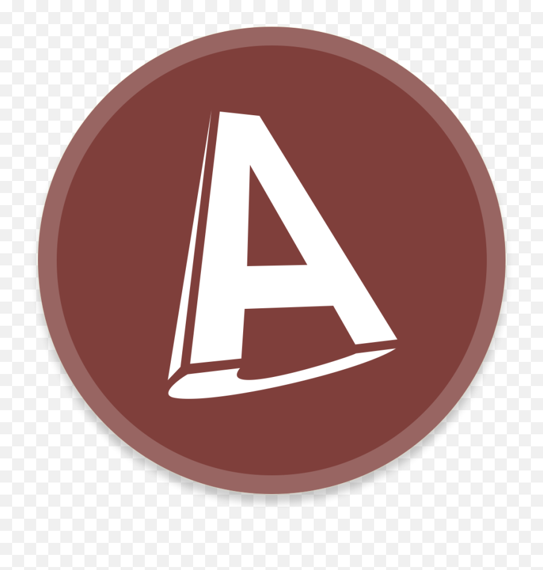

Profile
Education
January 2018 - April 2018
College of Cape Town
After working in the engineering field I attended College of Cape Town to further myself in my career and received my NQF level diploma in Mechanical Engineering. I then decided to further my studies at CPUT.
January 2019 - December 2020
Cape Peninsula University of Technology
At Cape Peninsula University of Technology I studied Mechanical Engineering. I learnt to work on the milling machine, centre laithe, CNC machining, and all types of welding. I also learnt to use drawing softwares such as AutoCad and SolidWorks.
Experience
January 2016 - December 2020
Phoenix Hose & Fittings
Participated in all phases of the company from customer sales to production. Assisted in meetings and product planning with clients to produce the desired end product.
January 2021 - August 2022
Old Mutual
Managed highly confidential information with discretion and confidentiality. Maintained a high level of organisation, ensuring that meetings, deadlines and duties were completed.
Skills
- HTML
- CSS
-  AutoCad
-
 SolidWorks
SolidWorks
Hobbies
- Gaming
- Football
- Content Creation